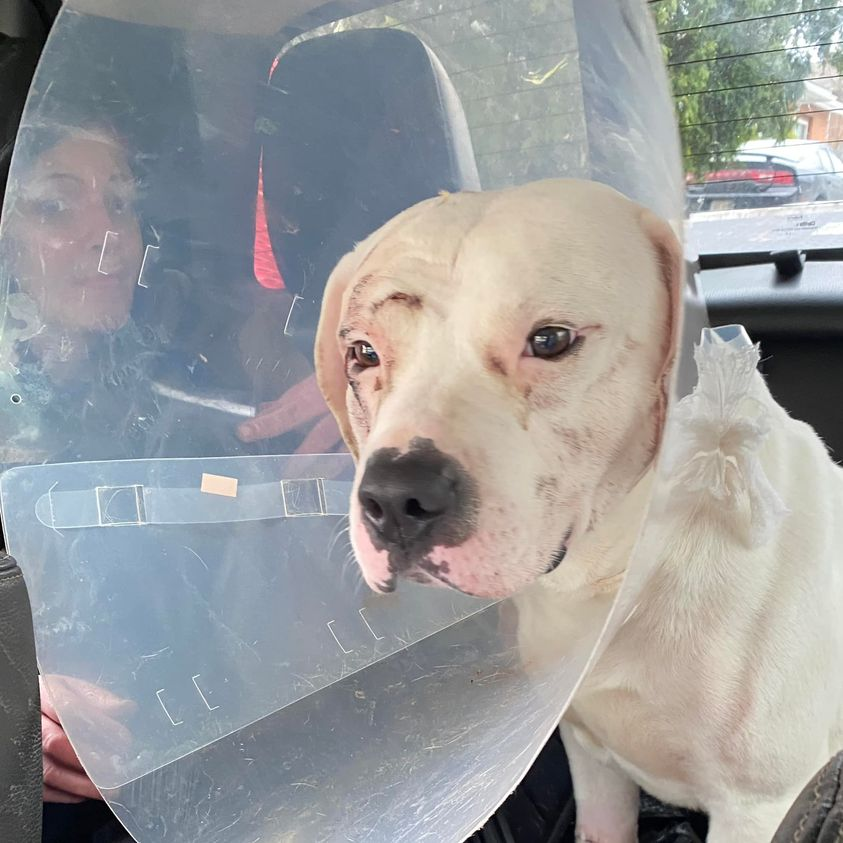

Mobile uploads
I’ve been pondering the amazing goodness and shocking badness that lives within all of us. The dog in this picture is who keeps coming to mind when I consider this swirling cauldron of life.
This is Nino. He’s one of my homeless friends. And like many of my homeless friends, he is not innocent. But he’s also not bad. He’s just a product of his parents and his community.
He was severely stabbed all over his body.
This came about because he was playing with a person in his home, his dad had left for a few minutes, and he got scared. He went from playing to attacking. Just like that.
The person defended himself the only way he could at the time. He used his knife.
I love Nino. Most of us do. Look at that sweet face. He is so kind and gentle and loving. Until he’s not.
He snapped at me once when I tried to get him to stop peeing in my building.
You could say that Nino is mentally ill. He doesn’t want to hurt people. But he can’t help it sometimes.
Isn’t that like all of us?
We don’t mean to snap at our kids or our spouse. We aren’t bad people as we say and think cruel intentions for the voting choices of half the country that doesn’t vote like us.
We just fall into an automatic reflex of harm and attack. We aren’t bad. We just can’t help ourselves.
Does Nino “deserve” our forgiveness? No. None of us deserve forgiveness. We are all like Nino to some degree. I’m just using Nino for my message today because many people find it easier to forgive animals than humans. We have an extreme disdain for fellow humans… probably because we see the terribleness of others that lives within ourselves.
Did you read today’s New York Times article about the women who live in dire poverty and get unnecessary hysterectomies so they can work longer in the sugar fields that supply sugar to Coke and Pepsi?
“I’m not a bad person for drinking soda pop, am I?”
“I don’t bite people, do I?”
We are all guilty. Our very existence is problematic for so many other creatures on Earth.
I’m setting the stage of us being terrible, cruel predators. But that’s not the end of the story. What twists my mind and spirit is that this is not the end of the story. It is only one part.
You see, some anonymous supporter took Nino to a veterinarian and got him completely fixed up. And it was a significant process. It cost $2800 and $125 worth of medication.
THAT is the part of the story that really mixes me up.
The goodness of people is equally as magnificent as the badness.
I live in that truth with my homeless work constantly. I live at the crossroads of construction and deconstruction. I watch the worst of humanity and the best of humanity pass my way in a continuous river of trash and crystal clear water.
It’s that whiplash of constant contradiction that threatens to break my sanity most of all. And it is ultimately my connection with the spiritual world that keeps me grounded.
This life we live in is nothing more than a user interface to help us grasp the infinite multiverse of the spiritual. It is all spiritual work. That’s the only explanation for any of this perplexing mystery.